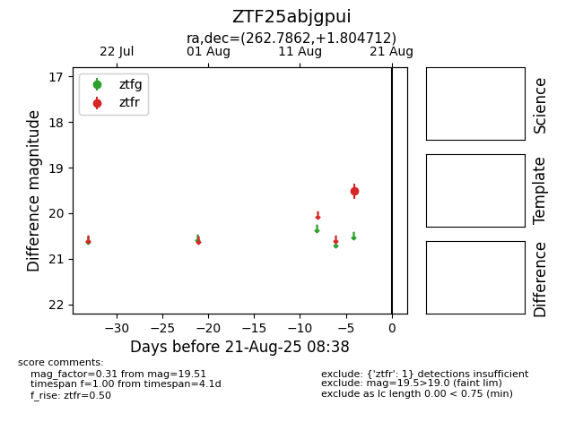

Target ZTF25abjgpui at 2025-08-21 08:38, see:
FINK: fink-portal.org/ZTF25abjgpui
Lasair: lasair-ztf.lsst.ac.uk/objects/ZTF25abjgpui
ALeRCE: alerce.online/object/ZTF25abjgpui
alt names
ZTF25abjgpui (ztf,alerce)
coordinates:
equatorial (ra, dec) = (262.7862,+1.80471)
galactic (l, b) = (25.1439,+18.64311)
photometry
last ztfr=19.51
1 ztfr detections
